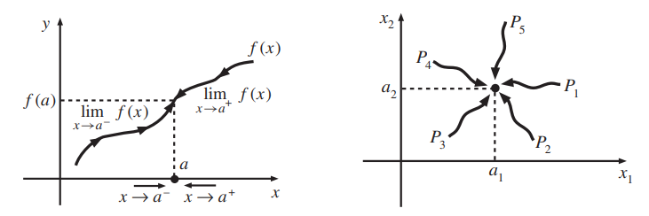
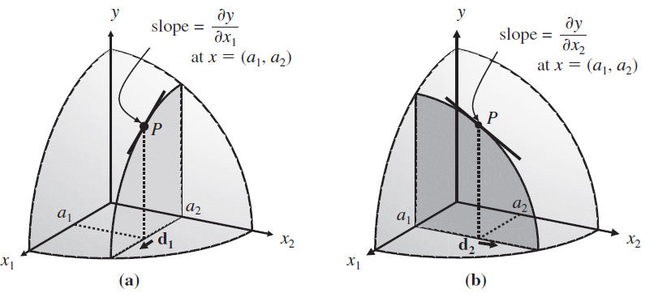
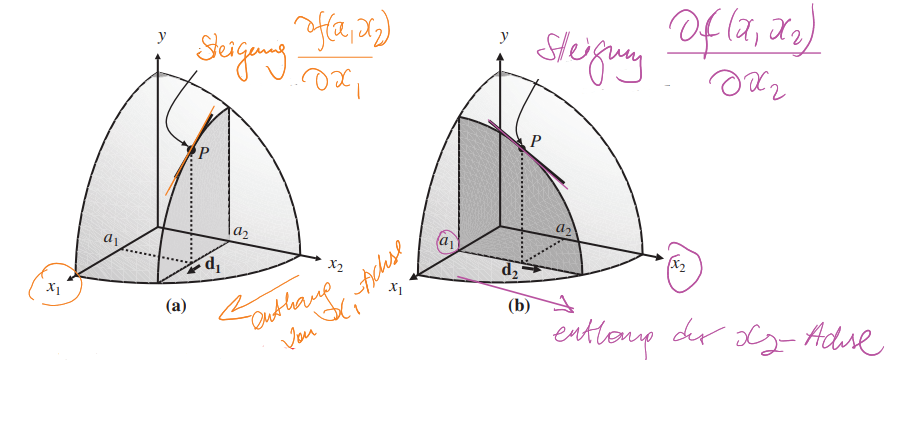
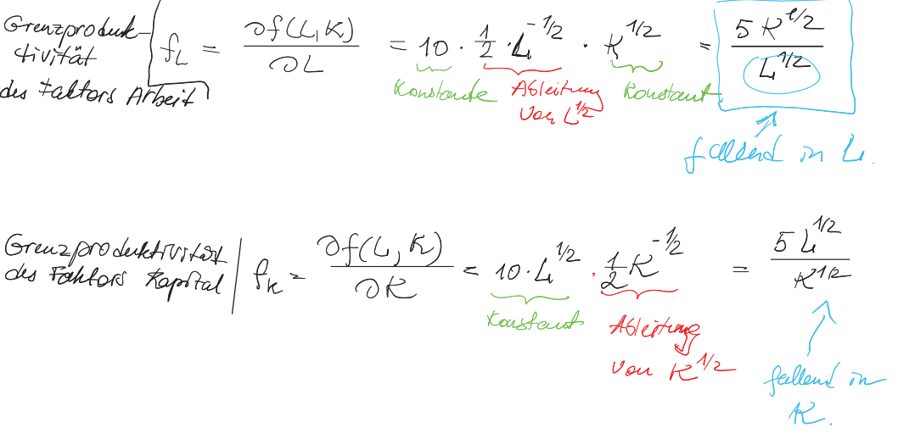
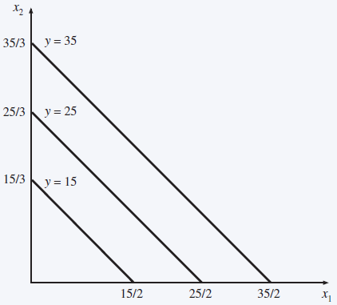

Chapter 10 Calculus with \(n\) variables
So far in calculus we have looked at functions with one variable.
However, application examples in linear algebra have already shown that typical problems involve functions of several variables. For example, a firm’s output level typically depends on several input variables.
Therefore we extend the notions of continuity and differentiability to functions of several variables. This is the basis for the (constrained) optimization of functions of several variables.
10.1 Continuity of a function
Let \(x = (x_1, ... , x_n)\) be a point in \(\mathbb {R}^n\) , and \(f (x) = f (x_1, ... , x_n ) = y\) denote a function with \(n\) variables.
In the univariate case (\(n = 1\)), it was sufficient to consider how the function approaches the point \(f (a)\) from the right and from the left to determine whether \(f\) is continuous at point \(a\):
\[\lim_{ x\rightarrow a^-} f (x) = \lim_{x\rightarrow a^+} f (x) = f (a).\]
- In the multivariate case, there are infinitely many ways to approach \(f (a)\) (see figure on the right).

The definition of continuity for functions in \(\mathbb {R}\) is: a function \(f : D\rightarrow \mathbb{R}\) is continuous in \(a \in D\) if for every sequence with \(\lim_{n\rightarrow\infty} x_n = a\) applies: \(\lim_{n\rightarrow \infty} f (x_n) = f (a)\).
That is, for every sequence whose subsequent terms are almost all “close” to \(a\), the associated function values are almost all “close” to \(f (a)\), where “close” is determined through the (Euclidean) distance \(|x_n − a|.\)
In the multivariate case, continuity is defined analogously for a function in \(\mathbb {R}^n\) by (again) taking the Euclidean distance as a basis:
\[d(x,a)= \sqrt{ \sum_{i=1}^{n} (x_i-a_i)^2} = ||{\bf x}-{\bf a}||.\]
- Special case \(\mathbb{R}^2\) :
\[d(x,a)= \sqrt{ (x_1-a_1)^2 + (x_2-a_2)^2}.\]
Definition 10.1 (Continuity of functions with n variables) A function \(f\) in \(\mathbb {R}^n\) is continuous at point \({\bf a} = (a_1,\ldots, a_n)^\top\), if for every \(\varepsilon>0\) there exists \(\delta>0\) such that from \(||{\bf x} - {\bf a}||<\delta\) follows \(||f({\bf x}) - f({\bf a})||<\varepsilon.\)
10.2 Partial derivatives
If a function has a continuous derivative, it is said to be differentiable. We now extend the concept of derivatives for functions \(f (x_1, ... , x_n)\) in \(\mathbb {R}^n\).
The (first) partial derivative of \(f\) after the \(i\)-th variable \(x_i\) is obtained by deriving \(f\) after \(x_i\), where the remaining variables \(x_1, ... , x_{i−1}, x_{i+1}, ... , x_n\) are treated as constants.
Definition 10.2 (Partial Derivative) Let \(f: \mathbb{R}^n \rightarrow \mathbb{R}\) be differentiable in each variable. The (first) partial derivatives of \(f\) for \(i = 1, ... , n\) are given by:
\[ \frac{ \partial f(x_1, ... x_n)}{ \partial x_i} =\lim_{ \Delta x_i \rightarrow 0} \frac{f(x_1, ... , x_{i-1} , x_i+ \Delta x_i, x_{i+1}, ... , x_n) -f(x_1, ... , x_n) }{ \Delta x_i }. \]
Shorthand:
\[\frac{ \partial f}{ \partial x_i } = f_{x_i}=f_i.\]
Since the partial derivatives are univariate derivatives, the usual derivation rules apply.
In the bivariate case (two variables: \(n = 2\)), i.e. \(f: \mathbb{R}^n \rightarrow \mathbb{R}\), the following applies:
\(f_{x_1}(x_1,x_2)= \frac{ \partial f(x_1, x_2)}{ \partial x_1} =\lim _{ \Delta x_1 \rightarrow 0} \frac{f(x_1, + \Delta x_1, x_{2} -f(x_1,x_2) }{ \Delta x_1 }\) (partial derivative to \(x_1\))
\(f_{x_2}(x_1,x_2)= \frac{ \partial f(x_1, x_2)}{ \partial x_2} =\lim _{ \Delta x_2 \rightarrow 0} \frac{f(x_1,x_2 + \Delta x_2) -f(x_1,x_2) }{ \Delta x_2 }\) (partial derivative with respect to \(x_2\))
The following figure illustrates the partial derivatives: 
Details
Example 10.1 (Partial derivatives of a function of two variables) Let \(f (x_1,x_2) = x_1^2 x_2\).
If \(x_2\) is kept constant, then the function is quadratic in \(x_1\) with the scaling factor \(x_2\).
If \(x_1\) is kept constant, then the function is linear in \(x_2\) with slope \(x_1^2\) .
This is reflected in the partial derivatives:
\[ f_{x_1}=\frac{ \partial f (x_1, x_2)}{ \partial x_1 } = 2x_1x_2, \] \[ f_{x_2}=\frac{ \partial f (x_1, x_2)}{ \partial x_2 } = x_1^2. \]
Exercise 10.1 (marginal productivity) Determine and interpret the partial derivatives of the production function
\(f (L,K) = 10L^{1/2} K^{1/2}\).
Here \(L\) represents the labor factor and \(K\) the capital factor.Answer

Partial derivatives \(\frac{\partial f}{\partial x_i}\) depend in general on the values of the remaining variables \(x_1, \ldots , x_{i−1}, x_{i+1},\ldots, x_n\).
Functions in the class of additive separable functions have the property that their partial derivatives are independent of the other variables.
Definition 10.3 (Additive separable functions) A function \(f (x_1, ... , x_n)\) is additive separable if it can be written as follows:
\[f (x_1, ... , x_n) = g_1 (x_1) + g_2 (x_2) + \ldots + g_n (x_n),\]
where \(g_i\) , \(i = 1, ... , n\), are univariate functions.
In the case of an additive separable function,
\[\frac{\partial f}{\partial x_i} = g^\prime_i(x_i).\]
Example 10.2 (Alex's utility function is an additive separable) Alex’s utility function, which we examined in the example 1.3, is additive separable because:
\[U(x,y) = \underbrace{\sqrt{x}}_{g(x)} + \underbrace{\sqrt{y}}_{g(y)}.\]
Therefore:
\[U_x(x,y) = U_x(x) = (\sqrt{x})^\prime = \frac 12(x)^{-\frac12} = \frac 12\cdot \frac 1{x^{ \frac12}} = \frac1{2\sqrt{x}}.\]
and
\[U_y(x,y) = U_y(y) = (\sqrt{y})^\prime = \frac1{2\sqrt{y}}.\]
The chain rule applies to partial derivatives.
Theorem 10.1 (chain rule) Let \(f (x_1(t), x_2(t))\) be an additive separable function whose variables \(x_1\) and \(x_2\) both depend on \(t\) (e.g. time). Then:
\[\begin{equation} \frac{df}{dt} = \frac{\partial f}{\partial x_1} \frac{dx_1}{dt} + \frac{ \partial f}{ \partial x_2 } \frac{dx_2}{dt} \tag{10.1} \end{equation}\]
Proof
\[\begin{align*}\frac{\text{d} f}{\text{d} t} & = \lim_{\Delta t\rightarrow 0} \frac{f(x_1(t+\Delta t), x_2(t+\Delta t)) - f(x_1(t),x_2(t))} {\Delta t}\\ &= \lim_{\Delta t\rightarrow 0} \frac{f(x_1(t+\Delta t), x_2(t+\Delta t)) - f(x_1(t), x_2(t+\Delta t))}{\Delta t} \\ & + \lim_{\Delta t\rightarrow 0} \frac{f(x_1(t), x_2(t+\Delta t)) - f(x_1(t),x_2(t))} {\Delta t}\\ &= \lim_{\Delta t\rightarrow 0} \frac{f(x_1(t+\Delta t), x_2(t+\Delta t)) - f(x_1(t), x_2(t+\Delta t))}{\underbrace{\Delta x_1}_{=x_1(t+\Delta t)-x_1(t)}} \frac{\Delta x_1}{\Delta t} \\[5pt] &\phantom{=\,} + \lim_{\Delta t\rightarrow 0} \frac{f(x_1(t), x_2(t+\Delta t)) - f(x_1(t),x_2(t))}{\Delta x_2} \frac{\Delta x_2}{\Delta t}\\ &= \frac{\partial f}{\partial x_1} \frac{\text{d} x_1}{\text{d}}+ \frac{\partial f}{\partial x_2}\frac{\text{d} x_2}{\text{d} t} \end{align*}\]Example 10.3 (chain rule) Let \(f (x_1,x_2) = 3x_1 + 5x_2\) with \(x_1(t) = t^2\) and \(x_2(t) = 4t^3\) .
The chain rule gives
\(\frac{df}{dt} = 3\frac{ d t^2}{ \ dt} + 5\frac{d4t^3}{dt} =6t+60t^2\)
The same result can be obtained by directly substituting the functions \(x_1(t)\) and \(x_2(t)\) into \(f\) and then deriving them.
Example 10.4 (Chain rule for the utility function) If you want to consider the utility function from example 1.3 as a function of externalities/emissions (e.g. CO\(2\)) that are associated with the consumption of the two goods, and given the emission functions:
\[t(x) = \frac12x, x>0; ~ t(y)=2y-1, y\geq 1\]
one can derive the utility function according to the externality \(t\) as follows:
- \(x,y\) as functions of \(t\) (switch the emission functions to \(x,y\)):
\[x(t)=2t \text{ and } y(t)=\frac12(t+1).\]
- Use the above chain rule to derive \(U(x(t),y(t))\) from \(t\):
\[\begin{align}\frac{dU}{dt} &= \color{blue}{\frac{\partial U}{\partial x}}\cdot \color{red}{\frac{dx}{ dt}} + \color{green}{\frac{\partial U}{\partial y}}\cdot \color{purple}{\frac{dy}{dt}}\\ &=\color{blue}{\frac1{2\sqrt{x}}}\cdot \color{red}{2} + \color{green}{\frac1{2\sqrt{y}}}\cdot \ color{purple}{\frac12}\\ &=\frac1{\sqrt{\underbrace{x}}_{=2t}} + \frac1{4\sqrt{\underbrace{y}}_{=0.5(t+1)}}\\ &=\frac1{\sqrt{2t}} + \frac1{4\sqrt{0.5(t+1)}}. \end{align}\]
10.3 Partial derivatives of higher order
Analogous to the univariate case, partial derivatives of higher order are obtained by multiple derivations.
Definition 10.4 (Partial derivatives of the second order) Let \(f: \mathbb{R}^n \rightarrow \mathbb{R}\) be a sufficiently differentiable function. The second order partial derivatives are given by:
\[\frac{ \partial^2 f(x_1, \ldots, x_n)}{ \partial x_i \partial x_j} : = \frac{ \partial f_{x_i} (x_1, ..., x_n)}{ \partial x_j} ,\ \ \ i,j=1, ... , n.\]
Shorthand:
\[\frac{ \partial^2 f}{ \partial x_i \partial x_j} = f_{x_ix_j}=f_{ij}.\]
The number of second-order partial derivatives is \(n^2\) and results from the number of combinations of \(i,j = 1, ... , n\).
The derivatives \(f_{ij}, i \neq j\), are called cross derivatives.
Example 10.5 (Partial derivatives of the second order) Let \(f: \mathbb{R}^2 \rightarrow \mathbb{R}\). The second order partial derivatives are given by:
\(f_{11}(x_1, x_2) = \frac{ \partial^2 f (x_1, x_2)}{ \partial x_1^2}\)
\(f_{12}(x_1, x_2) = \frac{ \partial^2 f (x_1, x_2)}{ \partial x_1\partial x_2}\)
\(f_{21}(x_1, x_2) = \frac{ \partial^2 f (x_1, x_2)}{ \partial x_2\partial x_1}\)
\(f_{22}(x_1, x_2) = \frac{ \partial^2 f (x_1, x_2)}{ \partial x_2^2}.\)
For a function \(f(x_1,x_2)=x_1^2\cdot x_2\), the second order partial derivatives are given by:
\(f_{11} (x_1,x_2) = \frac{ \partial^2 f (x_1, x_2)}{ \partial x_1^2} = \frac{ \partial f_1 (x_1, x_2)}{ \partial x_1} = 2x_2,\) \(f_{12} (x_1,x_2) = \frac{ \partial^2 f (x_1, x_2)}{ \partial x_1\partial x_2} = \frac{ \partial f_1 (x_1, x_2)}{ \partial x_2} = 2x_1,\) \(f_{21} (x_1,x_2) = \frac{ \partial^2 f (x_1, x_2)}{ \partial x_2\partial x_1} = \frac{ \partial f_2 (x_1, x_2)}{ \partial x_1} = 2x_1,\) \(f_{22} (x_1,x_2) = \frac{ \partial^2 f (x_1, x_2)}{ \partial x_2^2} = \frac{ \partial f_2 (x_1, x_2)}{ \partial x_2} = 0.\)
10.3.1 The gradient vector and the Hessian matrix
The first-order, resp. second-order partial derivatives are conveniently captured in vector, resp. matrix form.
Definition 10.5 (Gradient vector) Let \(f:\mathbb R^n\rightarrow\mathbb R\) be a differentiable function. The gradient vector is the vector of the first-order partial derivatives: \[\begin{equation*} \nabla f = \begin{bmatrix} f_1\\ f_2\\ \vdots\\ f_n \end{bmatrix} \quad\text{ or }\quad \nabla f^\top = \begin{bmatrix} f_1 & f_2 & \cdots & f_n \end{bmatrix}. \end{equation*}\]
- The operator \(\nabla\), an upside-down \(\Delta\), is called nabla.
- The term gradient refers to the elements of the vector indicating the grade or steepness of the function in each direction.
Example 10.6 (Gradient Vector) Let \(f(x_1,x_2)=5-2x_1+3x_2\).
- The first derivatives are \[\begin{equation*} f_1=-2, \quad f_2=3. \phantom{movethistotheleftmovemove} \end{equation*}\]
- The gradient vector is \[\begin{equation*} \nabla f = \begin{bmatrix} -2\\ 3 \end{bmatrix} \end{equation*}\]
Definition 10.6 (Hessian matrix) Let \(f: \mathbb{R}^n \rightarrow \mathbb{R}\) be a doubly differentiable function. The Hesse/ Hessian matrix contains the second-order partial derivatives:
\(H = \begin{bmatrix} f_{11} \ \ f_{12} \ \ ... \ \ f_{1n} \\ f_{21} \ \ f_{22} \ \ ... \ \ f_{2n} \\ ..\ \ .. \ \ .. \ \ .. \ \ .. \\ f_{n1} \ \ f_{n2} \ \ ... \ \ f_{nn} \end{bmatrix}\)
Example 10.7 (Gradient and Hessian matrix) Let \(f (x_1, x_2) = x_1^2 x_2\).
The first partial derivatives (summarized as a vector, the so-called gradient) and the Hessian matrix are given as: \[] G(x_1, x_2) =\nabla f= \begin{bmatrix} 2x_1 \cdot x_2 \\ x_1^2 \end{bmatrix} \]
\[H(x_1, x_2) = \begin{bmatrix} 2x_2 \ \ 2x_1 \\ 2x_1 \ \ 0 \ \ \end{bmatrix}. \]
Theorem 10.2 (Young's theorem, Schwarz's theorem) Let \(f (x_1, ... ,x_n)\) be a function with continuous partial derivatives of first and second order. Then the order of differentiation in cross-derivatives is irrelevant. Formally:
\(f_{ij} = f_{ji}, \ \ i,j = 1, ... , n\).
It follows from Young’s theorem that the Hessian matrix is symmetric.
Exercise 10.2 (The Gradient vector and the Hessian matrix) For the function \(f(x,y) = x^2 -5xy^2\) compute the Gradient vector and the Hessian matrix.
Answer
The Gradiant vector is: \[ G(x, y) = \nabla f=\begin{bmatrix} f_x\\ f_y\end{bmatrix}=\begin{bmatrix} 2x- 5y^2\\ - 10xy \end{bmatrix}. \] The Hessian matrix is: \[H(x,y) = \begin{bmatrix} f_{xx} & f_{xy}\\ f_{yx}& f_{yy}\end{bmatrix}= \begin{bmatrix} 2 & -10y\\ -10y & -10x\end{bmatrix}.\]10.4 Derivation of implicit functions\(^\ast\)
So far we always have functions in explicit form expressed, i.e. in the form \[\begin{equation*} y=F(x_1,\ldots,x_n). \end{equation*}\] In many economic problems, however, lies one functional relationship between two variables \(x\) and \(y\) in implicit form: \[\begin{equation*} F(x_1,\ldots,x_n,y)=0. \end{equation*}\] This equation defines the variable \(y\) as implicit Function of the variables \(x_1,\ldots,x_n\), i.e. \(y=y(x_1,\ldots,x_n)\).
In some cases it is possible to use an implicit function convert to an explicit function by rearranging; in many cases this is not possible (e.g.: \(F(x,y)=x^3 \text{e}^y - 2y \text{e}^x + 2=0\)).
Interestingly, in these cases, the derivative \(y'(x)\) can still be determined.
Example 10.8 (Implicit functions)
- Let \(F(x,y)=2y+4x-10=0\). Then: \(y=f(x)=5-2x\).
- Let \(F(x,y)=\text{e}^{x^2+y}-5=0\). Then: \(y=\ln(5)-x^2\).
- Let \(F(x,y)=x^2-3xy + y^3-7=0\). Then \(y=y(x)\) can be determined numerically (see figure).

- It turns out that \(F(x,y)=0\) is not necessarily a Function \(f:\mathbb R\rightarrow\mathbb R\), \(y=f(x)\), describes; the Function term is to be understood as “local”.
Example 10.9 (Profit maximization) We also consider a profit-maximizing company Production function \(y=f(x)\). A unit of input \(x\) costs \(w\) euros.
At a price level of \(p\) euro/unit, the profit is given as \[\begin{equation*} \Pi(x) = p\cdot f(x) - w\cdot x. \end{equation*}\]
At maximum profit applies: \[\begin{equation} p\, f^\prime(x) - w=0.\tag{10.2} \end{equation}\]
For exogenous variables \(p\) and \(w\), the company chooses \(x\) such that (10.2) holds.
The possibility of implicit differentiation means that one does not rely on production functions where (10.2) is explicitly resolved, that is, \(x\) can not be determined explicitly as a function of \(p\) and \(w\).
Theorem 3.1 (Derivation of implicit functions) Let \(F(x,y)=c\) be an implicit function with continuous derivatives of first-order in a neighborhood around \((x_0,y_0)\). If \(F_y(x_0,y_0)\not=0\), then there is a continuous function \(y=y(x)\) defined on an interval \(I\) around \(x_0\) such that
\(F(x,y(x))=c\) for all \(x\in I\),
\(y(x_0)=y_0\), and
It applies \[\begin{equation} y^\prime(x_0)= -\frac{F_x(x_0,y_0)} {F_y(x_0,y_0)}. \tag{10.3} \end{equation}\]
- Equation (10.3) is calculated using the chain rule (10.1): \[\begin{equation*} \frac{\partial}{\partial x} F(x_0,y(x_0))= F_x(x_0,y(x_0)) + F_y(x_0,y(x_0)) \cdot y^\prime(x_0), \end{equation*}\] where the derivative is \(0\) since the function \(F(x,y(x))\) is constant in \(x\in I\).
Example 10.10 (Implicit Derivation) Look at the equation \[\begin{equation*} F(x,y)=x^2-3xy + y^3-7=0, \end{equation*}\] at point \((x_0,y_0)=(4,3).\)
It applies \[\begin{align*} F_x (x,y)&= 2x-3y\quad \text{and } F_x(4,3)=-1, \\ F_y (x,y)&= -3x + 3y^2\quad \text{ and } F_y(4,3)=15. \end{align*}\] Since \(F_y\not=0\) are the condition for the implicit Differentiation fulfilled and it applies \[\begin{equation*} f^\prime(x_0) = -\frac{F_x(x_0,y_0)} {F_y(x_0,y_0)} = \frac{1}{15}. \end{equation*}\]
10.4.1 Contour lines / indifference curves\(^\ast\)
Consider a function \(y=f(x_1,x_2)\). This can a production function, a utility function, or a cost function. Often it is useful to consider a certain function value that is achieved by different combinations of the input variables \((x_1,x_2)\) (e.g. all consumption bundles of two goods that provide the same utility level, or all input combinations that provide the same production output): \[\begin{equation*} \{(x_1,x_2)|f(x_1,x_2)=y_0\}. \end{equation*}\] The graphical representation of such sets in the \(x_1\)-\(x_2\) coordinate system results in so-called contour lines or indifference curves (in the case of utility functions). Contour lines can also be created using the implicit differentiation.
- Let \(f(x_1,x_2)=2 x_1 + 3 x_2\) describe a consumer utility.
- For any indifference curve, i.e. any curve such that the equation \(2 x_1+3 x_2=y\) is satisfied for fixed \(y\), holds: \[\begin{equation*} \frac{\text{d} x_2}{\text{d} x_1} = -\frac{2}{3}. \end{equation*}\]
